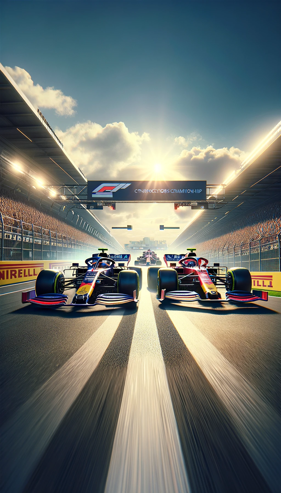

EVOLVING INTRINSIC MOTIVATIONS FOR ALTRUISTIC BEHAVIOR
Jane X. | Edward H. | Chrisantha F. | Wojchiech M . | Edgar A. | Joel Z.
DeepMind
Self-Organising Agent Systems - Master in Artificial
Intelligence - Mario R. O.
Paper Introduction
- Importance of Cooperation: Working together
towards a common goal, which is essential for achieving complex tasks and surviving in social and
environmental challenges.
- Intertemporal Social Dilemmas: Situations where
individuals must choose between immediate personal benefits and long-term collective well-being,
highlighting the conflict between selfish actions and altruistic outcomes over time.
- Evolution and Reinforcement Learning: A process
combining natural selection principles and learning strategies to adaptively improve behaviors or
strategies based on feedback from the environment, aimed at achieving better outcomes over generations.

Reward and Adaptation Methods
- Rewards
- Extrinsic Reward : \(r_i^E \left(s_{i},a_i\right)\) feedback
given by the environment for actions taken, reflecting immediate, tangible benefits.
- Intrinsic Reward: \(u(f)\) Additional rewards based on social
features or the collective welfare, to promote cooperative behaviors.
- Total Reward: The combination of extrinsic and intrinsic
rewards, guiding overall agent behavior. \(r_i\left(s_{i},a_i\right)= r_i^E \left(s_{i},a_i\right) +
u_i\left(f_i\right)\)
Reward and Adaptation Methods
- Auxiliar concepts
- Feature vector \(f\): A set of characteristics observed or
experienced derived from all players, used to compute the intrinsic reward via a neural network.
- Prospective Method: Intrinsic rewards are calculated based on
expectations of future rewards, aiming to influence immediate decisions for long-term benefits.
- Retrospective Method: Intrinsic rewards are based on past
actions' outcomes, focusing on historically received rewards, to encourage behaviors beneficial in
similar future contexts.
- Evolutionary Approach: Over time, the weightings within the
intrinsic reward function evolve, optimizing the balance between extrinsic and intrinsic rewards to
foster cooperative strategies.
Architecture: Building the agents
The agents are built using a deep reinforcement learning framework, each agent has:
- Policy Network: A neural network module which decides what actions to
take based on what the agent sees in its environment.
- Reward Network: this network modifies the rewards the agent receives
for certain actions, based on social factors.
Evolutionary Dynamics
- Random vs Assortative Matchmaking: Agents can be matched in two
different ways: uniformly at random or based on their level of cooperativeness.
- Shared vs. Individual Reward Networks: Two strategies for the
reward
network are tested, all agents in a game share a single reward network or each agent evolves its reward
network.
Training: teaching agents to cooperate
- Multi-Agent Reinforcement Learning:Agents learn
by doing. They take actions in the environment and learn based on the rewards or penalties they receive. The
goal is to maximize their cumulative reward over time.
- Evolutionary Strategy:Agents are periodically
evaluated, and their reward network's parameters are subject to evolution.
- The best-performing agents (higher rewards) are more likely to reproduce
passing their characteristics to the next generation.
- Over generations, agents with reward networks that lead to beneficial
cooperative behavior become more common.
Intertemporal Social Dilemmas (ISDs):The
environments for training, designed to mimic situations where cooperation is challenging but essential for
long-term success. Agents need to learn not just how to maximize immediate rewards but to cooperate for
greater future benefits.
Intrinsic Motivations: The reward network is
tweaked not just by direct outcomes but by intrinsic motivations (internal goals) that encourage behaviors
beneficial to the group, even if they're not immediately rewarding for the individual.
- Cleanup Game
- Agents must cooperate to clean a polluted aquifer to ensure the
continuous growth of apples. The dilemma arises when individuals must decide whether to clean
(contributing to the common good) or collect apples (personal gain), with the collective outcome
heavily dependent on group cooperation.
- Harvest Game
- The challenge is to collect apples without depleting them. The
social dilemma surfaces as agents must balance the temptation to harvest apples rapidly (for
immediate reward) against the sustainable management of resources, ensuring long-term availability
for all.
Experiment Environments
- (Baseline) Without using intrinsic
reward network
performs poorly on both games.
- Using Random Matchmaking + Individual
Retrospective Reward
Network, no better than PBT at Cleanup and moderately better at Harvest
- Using Assortative Matchmaking + No
Reward Network,
performance is same as baseline.
- Using Assortative Matchmaking +
Individual Retrospective
Reward Network, performance is very high.
- Using Random Matchmaking + Shared
Retrospective Reward
Network performs as well as AM+IRRN in Harvest, and slightly better for Cleanup.
Results: Random vs. Assortative Matchmaking
Results: Prospective vs Retrospective Reward Network
- Using Individual Prospectivepective Reward
Network, performance is slightly worse than baseline for both games.
- Using Individual Retrospective Reward
Network, no better than baseline at Cleanup and moderately better at Harvest
- Using Shared Prospective Reward Network,
although better than baseline, generally results in worse performance and more inestability.
- Using Shared Prospective Reward Network,
better performance and more estability.
- In Harvest:
- Prospectivepective RN leads to a lower equality,
Restrospective RN tends to very high equality.
- Higher propensity for tagging when using either a
Prospective RN or an Individual RN, than when using a Retrospective Shared
RN.
- Having No RN results in players collecting apples extremely
quickly, compared with much more sustainable behavior With RN.
- In Cleanup:
- Tends to a unstable and low overall equality even when
performance is high.
- The use of tagging by agents is overall much more
lower than in Harvest.
- No meaningful were obtained for Sustainability.
Results: Social Outcome Metrics
Conclusions
- As stated by the evolutionary theory, only via
natural selection does not leads to the emergence of cooperation.
- Assortative Matchmaking is sufficient to generate
cooperative behavior where signals of reward (intrinsic reward) are available.
- The proposed multi-level evolutionary paradigm
achieve cooperation in more general situations.
- Evolution bridges the gap between individual
learning and long-term group benefits, enhancing cooperation by revealing social signals related to
selfish behavior, that contributes to the resolution of the intertemporal social dilemmas. In accord,
laboratory experiments show that humans cooperate more readily when they can communicate.